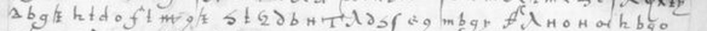

Mock-up for review, generated 9 October 2026 from the repository's audit files. Not published, not linked from anywhere; wording and layout are for the owner to judge.
Gramont to Villandry, Rome, 20 May 1530

As read, sign by sign, with grades
English (translation, interpretation)which is the reason I have made the said article separate

As read, sign by sign, with grades
English (translation, interpretation)for you, to [give] you knowledge of everything; but I [ask] you
English lines: "..." marks unread or uncertain signs; [square brackets] mark a word the English supplies over an unread sign or from the next line. The English carries no grades; the line above it does.
read: H key, C known text, S cryptanalysisM uncertainU unread · whole page at the holder
A 569-sign cipher passage read with the published Gramont 1530 key: 533 signs valued after a blind second reader's corrections, several lines continuous French. No printed plaintext or decipherment located after two logged searches. The second leaf (f.30, 1,973 signs) now reads with the same key on 22 of 55 lines and is with the verifier.
Results-register line: no safe sentence in AUDIT.md matched this entry.
Gramont tells Villandry that he has given the bearer an article set apart, addressed to Villandry although it is for the King, and calls it 'le total fondement'. (interpretation)
Around it
- 24 Feb 1530 Clement VII crowns Charles V emperor at Bologna context
- 8 June 1530 Gramont is made cardinal, three weeks after this letter context
- 1688 Le Grand prints Gramont's 1530 dispatches; this letter not found there (pp.394-542 read page by page)
Named in the cipher
- le roy a king; the reading does not say which
- Villandry Francis I's secretary; addressee context
N4 no prior decipherment located (editions searched)partially deciphered (about 94% of the cipher text)a key published by someone else, applied by us (credited)audit 24 Sept 2026audit 3 Oct 2026
- Regenerate:
python3 ciphers/fr2980-gramont/decode.py --check - Edition: no printed plaintext located: Le Grand, Histoire du divorce III (1688) pp.394-542, Letters and Papers Henry VIII IV(3) (searched)
- Folder · Audit · Reading
Search log from AUDIT.md (30 search lines, 30 on blocked or unreachable hosts)
- Hosts and counts are in section 6. "Searched" means the text itself was searched. "Snippet" means only
- Searched. The Addenda vol. I (1929) was not found on IA (advancedsearch, 0 hits): *unreached*.
- are English ambassadors' reports of 1530-33. Searched.
- CSP Spanish* iv (IA calendarofletter0004pasc, …_f5h4, full text): 0 "Villandry". Searched. The
- CSP Venetian* iv, 1527-1533 (IA calendarofstatep4187brow, full text): 0 "Villandry". Searched.
- cited only to the Ferrarese ambassador (ASModena busta 9) and CAF; no fr.2980, no cipher. Searched.
- Montmorency le 20 mars" (not ours). Searched (fts only).
- Guillaume du Bellay 1904), which shows the volume was used by editors. Not items 21-22.* Searched.
- 1527-30; recordsofreforma02pocouoft = vol. 2): 0 "Villandry". The Tarbe hits are English despatches. Searched.
- documents and references to Le Grand III.399 and III.454 (Bologna, March 1530). Searched.
- in other volumes (27 Aug; 11 Oct). *Not items 21-22.* Searched.
- Two of the first audit's four gaps are now closed or narrowed: Le Grand's Preuves was read page by page, and
- a decipherment of nos.21-22. **Searched.
- The whole BnF manuscript finding aids** (archivesetmanuscrits.bnf.fr full-text search, via the browser
- 1527 Tarbes instructions only. **Searched.
- Camusat. A full-text Gallica copy exists at *ark:/12148/bpt6k5039434* (texteImage). It was not used because
- from 1525-26; "Villandry 1530" 0. It stops in 1526, and no sequel covering 1530 was found. **Searched, out of range.
- the du Bellay–Montmorency letters of January-March 1530 (fr.3079). **Searched.
- not on IA by title (its range is 1525-26). **Searched / Captivité unreached.
- 1530" and "20 May 1530" all 0. **Searched.
- Google Books API "fr. 2980" Gramont gives Decrue (other items) and Tournon's correspondence (fol.33). **Searched.
- 32305, 1758); 0 hits for Villandry, Gramont or Tarbe outside unrelated rows. **Searched.
- Camusat, HathiTrust full-text search, the rate-limited Google Books queries, and the fr.3019 no.31 companion
- volumes already identified by id (used for Le Grand in the first/second audit); it is not a general full-text
- Located but still not full-text-searchable; status changes from "unreached" to "found, unreadable via API."
- Tarbes 77 hits, all 1527-29 (Spain, Burgos, Poza) or index. None is of May 1530. **Searched.
- only Tarbes items are doc. XXXVIII (April 1530 letter to the king, above) and its index entry. **Searched; a
- Italy. No Gramont letter of 1530, and no "liberté de Florence" declaration. *Searched.* Vol. I
- appear in the fts only for the April quotation. **Searched.
- "20 mai 1530" and for "déchiffr-"/"en chiffres" with 1530/Tarbe/Gramont. *Searched.* Dupuy 452 f.48 is
Unreachable
- not page by page, because Google Books blocked the page and PDF routes (429 /sorry/). The counts are strong
- API snippets could be checked. (3) HathiTrust full-text search (Cloudflare) and JSTOR (ASKS row 17) could not be
- Béthune collection, the source of fr.2980). The API's signed PDF link and the page view both returned 429
- HathiTrust full-text search: Cloudflare-blocked per CLAUDE.md, not attempted. EF token counts were used for
- Le Grand instead. **Unreachable.
- DECODE: login rejected (ASKS row 1); cached catalogue empty. **Unreachable.
- books.google.com: 1 (429 /sorry/, stopped). gallica.bnf.fr: 2 SRU catalogue queries, no images.
- Not closed. Google Books page view is blocked (books.google.com answered 403 /sorry/ to one request; host
- HathiTrust full-text search: not attempted (Cloudflare). JSTOR: ASKS row 17. Michon, La Crosse et le Sceptre:
- bim_early-english-books-1641-1700_theodora-pierdos-bo_1967_ia40331301-07): "2980", "Villandry", "May 20
- (403 /sorry/, host stopped). www.google.com: 1 (Books feed, 200, unused). github.com: 2 shallow clones.
- Gap (3), HathiTrust full-text search — still unreachable, as documented.** One attempt via
- proxy reported brunhild.challenges.cloudflare.com:443 — connect_rejected (organization policy) — the Cloudflare
- 403. This matches CLAUDE.md's existing note that HathiTrust Cloudflare-challenges this environment. The HTRC
- Google Books, re-run keyed (&key=$GOOGLE_BOOKS_KEY&country=US, key never printed).** The 429/403 /sorry/
- viewability: NO_PAGES — no snippet, no preview, nothing to search. *Confirmed unreachable*, not merely
- never printed): 7. babel.hathitrust.org: 1 direct (403) + 1 via tools/browser_fetch.js (timed out, Cloudflare
- connect_rejected). catalog.hathitrust.org: 1 (403). data.htrc.illinois.edu: 1 (reachability only, 200).
- LCCN *75403742*, from the Library of Congress's own MARCXML record for the true 1619 first edition (Troyes
- N. Moreau, "Pre-1801 Imprint Collection", confirmed by lccn.loc.gov/75403742/marcxml: dateline 1619, no
- routes already logged: catalog.hathitrust.org/Search/Home?lookfor=... returns Cloudflare's "Just a moment..."
- interstitial (HTTP 403, cRay challenge page saved), the same wall as babel.hathitrust.org. search.worldcat.org
- check; 1 Search/Home title search, 403 Cloudflare challenge, not retried). openlibrary.org: 4 (2 search.json
- Hosts unreachable for the whole pass, all six targets:** api.openalex.org (this container's shared egress IP
- no OPENALEX API key is set in this environment) and api.semanticscholar.org (429 "Too Many Requests" on 6
- unreachable, not as a negative.
- f.29r-30. Two of OpenAlex/Semantic Scholar/CrossRef/Persée/HAL/Google Scholar were unreachable (not searched)
- Requests this session: api.openalex.org 8 (all 429, one shared-budget message, no data returned).
- api.semanticscholar.org 6 (all 429). api.crossref.org 6 (one per row, query.bibliographic, 200 each).
- text (Cloudflare). f.30 adds three gaps of its own. (1) The Archivio storico italiano Appendice was read in vol.